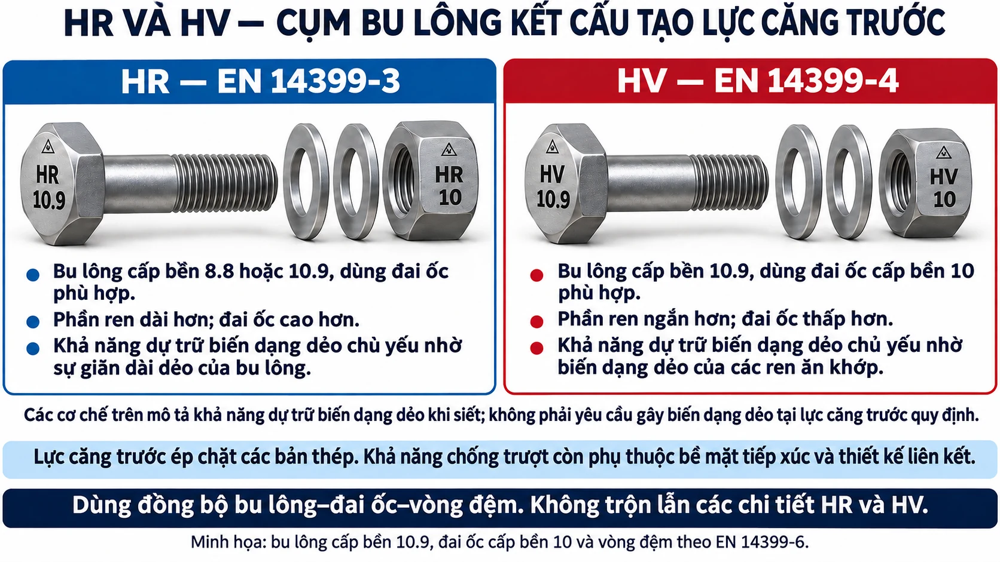
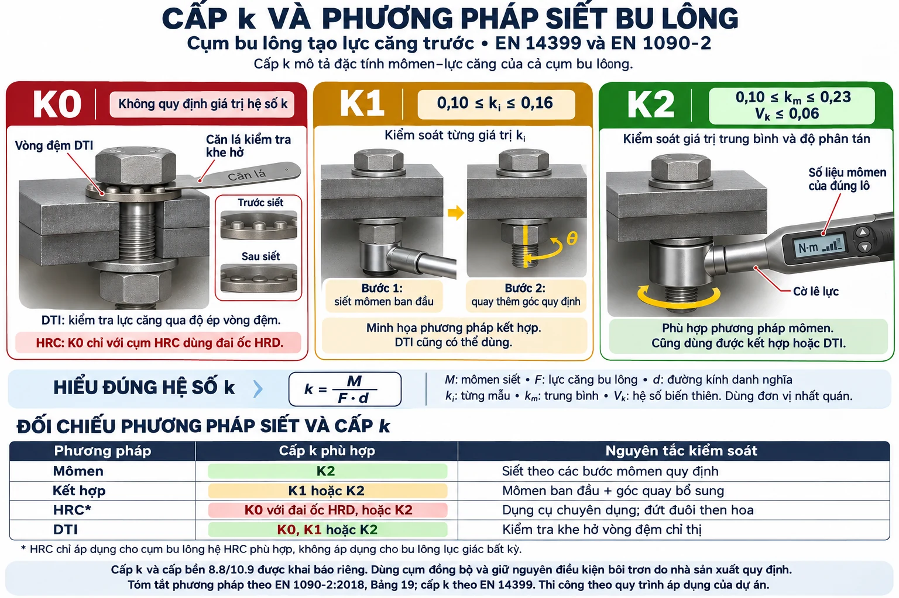
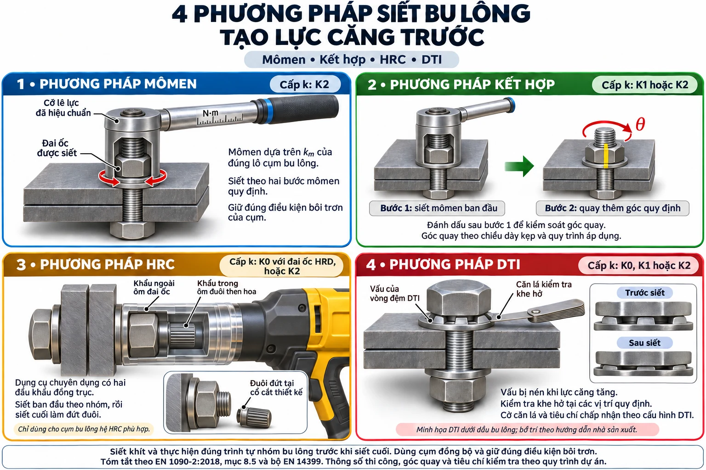
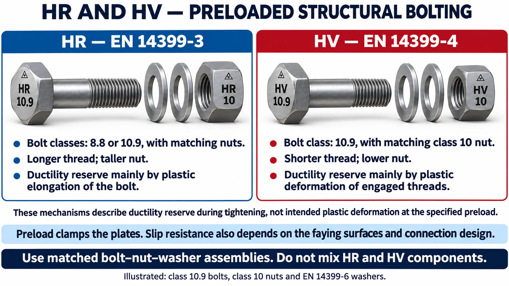
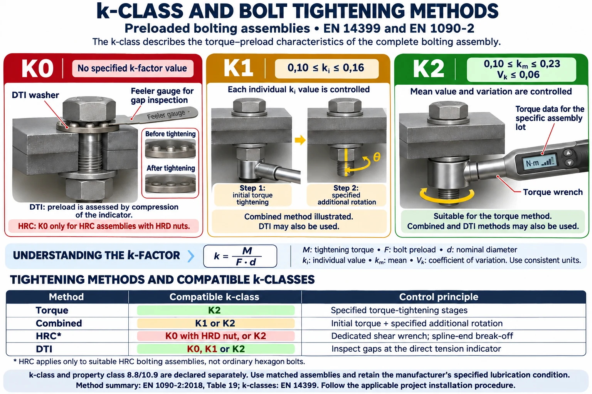

Trong cả một kết cấu thép nặng hàng nghìn tấn, bu lông là chi tiết nhỏ nhất, và thường cũng là chi tiết bị kiểm tra qua loa nhất. Nhưng liên kết bu lông mới là nơi truyền lực từ cấu kiện này sang cấu kiện khác; hỏng một liên kết là hỏng cả đường truyền lực. Bài này đi qua những điều QC cần biết, theo đúng thứ tự mà bạn gặp chúng ngoài công trường.
Câu hỏi đầu tiên: liên kết có dự ứng lực hay không?
Có hai kiểu liên kết, và chúng khác nhau về nguyên lý. Với liên kết không dự ứng lực, tải truyền qua thân bu lông chịu cắt và ép mặt vào thành lỗ; chỉ cần siết chặt tay có kiểm soát. Với liên kết dự ứng lực, bu lông được siết đến một lực kẹp xác định. Chỉ liên kết chống trượt (Category B, C theo EN 1993-1-8) mới được thiết kế để truyền lực cắt bằng ma sát giữa các mặt. Dự ứng lực còn được dùng cho liên kết chịu kéo (Category E), chịu mỏi, chịu động đất, cho yêu cầu thi công hoặc như một biện pháp chất lượng (EN 1090-2:2018, 8.5.1); khi đó liên kết vẫn có thể được tính theo cắt và ép mặt.
Từ câu trả lời này kéo theo mọi thứ khác: loại bu lông phải mua, cách siết và hồ sơ phải lưu. Trả lời sai thì mua sai bu lông, siết sai cách và nghiệm thu sai. Với liên kết dự ứng lực, cấp k, phương pháp siết và biên bản siết là bắt buộc.
Ba hệ tiêu chuẩn bu lông kết cấu
Bu lông dự ứng lực theo hệ châu Âu thuộc bộ EN 14399, gồm nhiều phần: -1 yêu cầu chung, -2 tính phù hợp để dự ứng lực, -3 hệ HR, -4 hệ HV, -5 long đen phẳng, -6 long đen vát cạnh, -9 long đen chỉ thị lực DTI, -10 hệ HRC. Bu lông không dự ứng lực theo EN 15048 (ký hiệu SB trên đầu). Hệ Mỹ dùng ASTM F3125 với các cấp A325 (cùng nhóm cường độ với 8.8) và A490 (cùng nhóm cường độ với 10.9; không thay thế trực tiếp cho bộ bu lông EN) cùng các biến thể F1852 và F2280.
Một nguyên tắc quan trọng: bu lông dự ứng lực phải mua nguyên bộ, từ một nhà sản xuất, một lô. Ghép bu lông của hãng này với đai ốc của hãng khác làm mất hiệu lực toàn bộ khai báo cấp k.
Cấp bền và lực dự ứng lực Fp,C
Cấp bền đọc rất nhanh nếu biết quy tắc. Với bu lông 10.9, số thứ nhất nhân 100 là độ bền kéo fub = 1000 MPa; số thứ hai chia 10 là tỷ số giới hạn chảy trên độ bền kéo, nên fyb = 900 MPa. Cấp 8.8 có fub = 800 MPa và fyb = 640 MPa. Đai ốc phải cùng cấp: bu lông 10.9 đi với đai ốc cấp 10.
Lực dự ứng lực mà phương pháp siết nào cũng phải đạt là Fp,C = 0,7 · fub · As, trong đó As là diện tích tiết diện chịu kéo của ren, không phải diện tích thân. Fp,C là lực kẹp tối thiểu sau khi siết.
Một bộ bu lông gồm những gì: hệ HR và hệ HV
Một bộ gồm bu lông, đai ốc và long đen. Hệ HR (EN 14399-3:2015) gồm các tổ hợp 8.8/8, 8.8/10 và 10.9/10, ren dài hơn và đai ốc cao hơn; dự trữ độ dẻo chủ yếu đến từ biến dạng dẻo kéo dài của thân bu lông. Hệ HV (EN 14399-4) dùng bu lông 10.9 đi với đai ốc cấp 10, ren ngắn hơn và đai ốc thấp hơn; dự trữ độ dẻo chủ yếu đến từ biến dạng dẻo của các ren ăn khớp. Các cơ chế này mô tả dự trữ độ dẻo khi siết, không có nghĩa là để bu lông biến dạng dẻo ở mức dự ứng lực quy định. Dự ứng lực kẹp chặt các tấm; sức cản trượt còn phụ thuộc bề mặt tiếp xúc và thiết kế liên kết. Không trộn bộ HR với bộ HV, và khi dùng long đen vát cạnh theo EN 14399-6, mặt vát phải quay về phía bán kính chân đầu bu lông.

Cấp k: thông tin quyết định cách bạn được phép siết
Hệ số k = M / (F · d), với M là mô-men siết, F là lực kẹp và d là đường kính danh nghĩa; nó cho biết mối quan hệ giữa mô-men siết và lực kẹp, và do lớp bôi trơn của nhà sản xuất quyết định. Nhà sản xuất khai báo ba cấp: K0 nghĩa là không khai báo hệ số k; K1 khai báo từng giá trị ki trong khoảng 0,10 đến 0,16; K2 khai báo giá trị trung bình km trong khoảng 0,10 đến 0,23 với hệ số biến động Vk không quá 0,06.

Mỗi phương pháp siết chỉ tương thích với một số cấp k: phương pháp mô-men dùng K2; phương pháp kết hợp dùng K1 hoặc K2; HRC dùng K0 (với đai ốc HRD) hoặc K2; DTI dùng K0, K1 hoặc K2. HRC chỉ áp dụng cho cụm bu lông hệ HRC phù hợp, không áp dụng cho bu lông lục giác thông thường. Cấp k và cấp bền 8.8/10.9 được khai báo riêng. Nhãn hộp phải ghi cấp k; với K2 phải có km và Vk (EN 14399-3:2015: 0,10 ≤ km ≤ 0,23 và Vk ≤ 0,06). Phương pháp mô-men chỉ dùng được với K2 (EN 1090-2:2018, Bảng 19); bộ K0 không khai báo hệ số k. Vì lớp bôi trơn quyết định hệ số k, việc rửa dầu, sơn thêm hay để gỉ đều làm sai mô-men.
Bốn phương pháp tạo dự ứng lực
Có bốn cách đưa bu lông đến lực kẹp yêu cầu. Phương pháp mô-men dùng cờ lê lực hiệu chuẩn với bu lông K2, siết theo hai bước mô-men quy định. Phương pháp kết hợp (K1 hoặc K2) siết mô-men bước một, đánh dấu vị trí để kiểm tra, rồi quay thêm một góc quy định ở bước hai; góc quay phụ thuộc chiều dày kẹp và quy trình áp dụng. Bu lông HRC (K0 với đai ốc HRD, hoặc K2) dùng cờ lê chuyên dụng có hai đầu đồng trục: đuôi ren gãy theo thiết kế khi đạt đủ lực. Long đen chỉ thị DTI (K0, K1 hoặc K2) có các vấu bị ép phẳng khi đủ lực; kiểm tra khe hở tại các vị trí quy định, còn chiều dày dưỡng đo và tiêu chí chấp nhận phụ thuộc cấu hình DTI.

Quy tắc bất di bất dịch: không tự đổi phương pháp siết ngoài công trường. Phương pháp phải khớp với cấp k đã mua (tóm tắt theo EN 1090-2:2018, Bảng 19; các cấp k theo EN 14399) và nằm trong quy trình lắp dựng đã duyệt, và cờ lê lực phải còn hạn hiệu chuẩn.
Ví dụ tính mô-men siết cho M20 cấp 10.9
Hãy tính cho một bu lông M20 cấp 10.9, cấp k là K2. Tra As = 245 mm² và fub = 1000 MPa, ta có Fp,C = 0,7 × 1000 × 245 = 171 500 N; EN 1090-2:2018 Bảng 18 làm tròn thành 172 kN và đây là giá trị dùng để tính. Nếu nhà sản xuất khai báo km = 0,13 thì mô-men chuẩn Mr,2 = km · d · Fp,C = 0,13 × 20 mm × 172 kN = 447 N·m. Bước siết thứ nhất khoảng 0,75 × 447 = 335 N·m cho toàn bộ bu lông của liên kết; bước thứ hai 1,10 × 447 = 492 N·m, siết theo trình tự từ phần cứng nhất đến phần kém cứng nhất của liên kết (EN 1090-2, 8.5.1 và 8.5.3). Với bộ K1 dùng phương pháp kết hợp, Mr,1 = 0,125 · d · Fp,C và bước 1 lấy 0,75 Mr,1 (Bảng 20: M20 10.9 = 322 N·m), sau đó xoay thêm theo Bảng 21.
10.9: fub = 1000 MPa
= 171 500 N → 172 kN (Bảng 18)
= 447 N·m
toàn bộ bu lông
từ phần cứng nhất
Nếu bộ K1 mà nhà sản xuất không cho km, EN 1090-2 cho phép dùng km = 0,125 để tính bước mô-men đầu của phương pháp kết hợp. Các hệ số 0,75 và 1,10 trong ví dụ phải lấy theo EN 1090-2 điều 8.5 và 12.5.2 của ấn bản và quy trình lắp dựng đang áp dụng.
Những điều không được làm với bu lông dự ứng lực
- Không dùng lại bu lông đã siết đến dự ứng lực rồi nới ra: EN 1090-2:2018 (8.5.1) yêu cầu tháo bỏ và loại toàn bộ bộ bu lông đó.
- Chỉ mở hộp khi dùng, giữ kín phần còn lại và không thay đổi lớp bôi trơn xuất xưởng (EN 1090-2, 8.5.1); bu lông gỉ, bẩn hoặc nghi mất bôi trơn phải được đánh giá lại trước khi dùng.
- Siết từ vùng cứng nhất ra mép, làm đủ hai bước cho toàn bộ liên kết rồi mới sang liên kết khác.
- Không trộn bộ của hai nhà sản xuất hoặc hai lô khác nhau.
QC kiểm gì khi nhận hàng và khi nghiệm thu
| Thời điểm | Hạng mục kiểm tra | Căn cứ / cách làm |
|---|---|---|
| Nhận hàng | Chứng chỉ 3.1 theo số lô, kèm kết quả thử tính phù hợp | EN 1090-2 Bảng 1 (chú thích d, e): được miễn 3.1 nếu bộ bu lông có số lô và nhà sản xuất truy xuất được qua hồ sơ FPC; số lô trên nhãn hộp phải khớp |
| Nhận hàng | Ký hiệu trên đầu bu lông, đai ốc, long đen | Cấp bền + HR/HV (SB với EN 15048) và mã nhà sản xuất (EN 14399-3, 3.3 và 4.5); dấu CE nằm trên nhãn hoặc tài liệu kèm theo, không yêu cầu trên chi tiết |
| Nhận hàng | Nhãn hộp có cấp k; với K2 có km và Vk | Phương pháp mô-men chỉ dùng K2 (EN 1090-2, Bảng 19) |
| Nhận hàng | Kích thước, chiều dài, lớp phủ, gỉ và dầu bôi trơn | Kiểm mẫu theo lô; hộp đã mở phải đánh giá bảo quản, bẩn, gỉ và bôi trơn |
| Trước lắp | Chiều dài bu lông so với chiều dài kẹp thực tế | Bảng chiều dài kẹp trong Phụ lục A của EN 14399-3/-4 |
| Khi siết | Cờ lê lực còn hạn hiệu chuẩn; đúng phương pháp theo cấp k | Hồ sơ hiệu chuẩn; quy trình lắp dựng đã duyệt |
| Sau khi siết | HRC: 100% đã đứt đuôi, kèm kiểm tra đúng bộ bu lông, đủ long đen và các bản ghép ép sát (khe hở dư ≤ 2 mm trước khi siết, EN 1090-2 8.5.1). DTI: đo khe hở bằng thước lá | Kiểm 100% bằng mắt với HRC; đo mẫu với DTI |
| Sau khi siết | Phương pháp mô-men và kết hợp: kiểm tra lại theo tỷ lệ quy định | EN 1090-2 điều 12.5.2; ghi biên bản siết bu lông |
| Sau khi siết | Phần ren nhô ra sau đai ốc tối thiểu một bước ren | Kiểm bằng mắt toàn bộ liên kết |
Một biên bản siết bu lông không có số lô và không có thông số siết phù hợp với phương pháp (mô-men các bước với phương pháp mô-men; mô-men bước 1 và góc xoay với phương pháp kết hợp; xác nhận đứt đuôi với HRC; khe hở DTI) là biên bản không dùng được khi audit.
Nếu chỉ nhớ một điều từ bài này, hãy nhớ ba thứ phải khớp nhau: cấp k trên nhãn hộp, phương pháp siết trong quy trình, và dụng cụ siết đang cầm trên tay.
In a steel structure weighing thousands of tonnes, the bolt is the smallest part, and often the one checked most casually. But the bolted joint is where force passes from one member to another; a failed joint breaks the whole load path. This article covers what QC needs to know, in the order in which you meet it on site.
The first question: is the joint preloaded?
There are two kinds of joint and they differ in principle. In a non-preloaded joint the load passes through the bolt shank in shear and bearing on the hole wall; controlled snug tightening is enough. In a preloaded joint the bolt is tightened to a defined clamping force. Only slip-resistant joints (Categories B and C in EN 1993-1-8) are designed to transfer shear by friction between the faces. Preload is also used for tension joints (Category E), fatigue, seismic connections, execution purposes or as a quality measure (EN 1090-2:2018, 8.5.1); such joints may still be designed for shear and bearing.
Everything else follows from this answer: which bolts to buy, how to tighten and which records to keep. A wrong answer means buying the wrong bolts, tightening the wrong way and accepting the wrong way. For preloaded joints the k-class, the tightening method and the tightening record are mandatory.
Three structural bolt standard systems
Preloaded bolts in the European system belong to the EN 14399 series, with several parts: -1 general requirements, -2 suitability for preloading, -3 HR system, -4 HV system, -5 flat washers, -6 chamfered washers, -9 DTI washers, -10 HRC system. Non-preloaded bolts follow EN 15048 (marked SB on the head). The US system uses ASTM F3125 with grades A325 (same strength group as 8.8) and A490 (same strength group as 10.9; not a direct substitute for EN assemblies) plus the variants F1852 and F2280.
An important rule: preloaded bolts must be bought as a full set, from one manufacturer, one lot. Mixing one maker’s bolt with another’s nut voids the whole k-class declaration.
Strength grade and the preload Fp,C
The strength grade is quick to read if you know the rule. For a 10.9 bolt, the first number times 100 is the tensile strength fub = 1000 MPa; the second number divided by 10 is the yield-to-tensile ratio, so fyb = 900 MPa. Grade 8.8 has fub = 800 MPa and fyb = 640 MPa. The nut must match: a 10.9 bolt goes with a class 10 nut.
The preload that every tightening method must achieve is Fp,C = 0.7 · fub · As, where As is the tensile stress area of the thread, not the shank area. Fp,C is the minimum clamping force after tightening.
What a bolt set contains: HR and HV systems
A set consists of a bolt, a nut and washers. The HR system (EN 14399-3:2015) covers the combinations 8.8/8, 8.8/10 and 10.9/10, a longer thread and a taller nut; ductility reserve comes mainly from plastic elongation of the bolt shank. The HV system (EN 14399-4) uses 10.9 bolts with class 10 nuts, a shorter thread and a lower nut; ductility reserve comes mainly from plastic deformation of the engaged threads. These mechanisms describe ductility reserve during tightening, not plastic deformation intended at the specified preload. Preload clamps the plates; slip resistance also depends on the faying surfaces and the connection design. Do not mix HR and HV sets, and when using chamfered washers to EN 14399-6, the chamfer must face the fillet under the bolt head.

The k-class: the information that decides how you may tighten
The k-factor k = M / (F · d), where M is the tightening torque, F the clamping force and d the nominal diameter, gives the relation between tightening torque and clamping force, and it is set by the manufacturer’s lubricant. The manufacturer declares one of three classes: K0 means no k-factor is declared; K1 declares individual ki values between 0.10 and 0.16; K2 declares a mean km between 0.10 and 0.23 with a coefficient of variation Vk not above 0.06.

Each tightening method is compatible only with certain k-classes: the torque method uses K2; the combined method uses K1 or K2; HRC uses K0 (with HRD nuts) or K2; DTI uses K0, K1 or K2. HRC applies only to a matching HRC bolting assembly, not to ordinary hexagon bolts. The k-class and the 8.8/10.9 property class are declared separately. The box label must show the k-class; for K2 it must also give km and Vk (EN 14399-3:2015: 0.10 ≤ km ≤ 0.23 and Vk ≤ 0.06). The torque method can only be used with K2 (EN 1090-2:2018, Table 19); K0 assemblies declare no k-factor. Because the lubricant sets the k-factor, washing it off, painting or letting it rust all falsify the torque.
Four ways to apply preload
There are four ways to bring a bolt to the required clamping force. The torque method uses a calibrated torque wrench with K2 bolts, in two specified torque stages. The combined method (K1 or K2) applies a torque in step one, marks a reference for checking, then rotates a specified further angle in step two; the rotation depends on the grip thickness and the applicable procedure. HRC bolts (K0 with HRD nuts, or K2) use a dedicated wrench with two coaxial sockets: the spline shears off by design at full force. DTI washers (K0, K1 or K2) have protrusions that flatten at full force; gaps are inspected at specified positions, and the feeler-gauge thickness and acceptance criteria depend on the DTI configuration.
An unbreakable rule: never change the tightening method on site. The method must match the k-class purchased (summarised in EN 1090-2:2018, Table 19; k-classes per EN 14399) and be in the approved erection procedure, and the torque wrench must be within its calibration date.
Worked torque example for M20 grade 10.9
Let us calculate for an M20 grade 10.9 bolt with k-class K2. Looking up As = 245 mm² and fub = 1000 MPa, we get Fp,C = 0.7 × 1000 × 245 = 171,500 N; EN 1090-2:2018 Table 18 rounds it to 172 kN, which is the value used. If the manufacturer declares km = 0.13 then the reference torque Mr,2 = km · d · Fp,C = 0.13 × 20 mm × 172 kN = 447 N·m. Step one is about 0.75 × 447 = 335 N·m on all bolts of the joint; step two is 1.10 × 447 = 492 N·m, tightened progressively from the most rigid to the least rigid part of the joint (EN 1090-2, 8.5.1 and 8.5.3). For K1 assemblies with the combined method, Mr,1 = 0.125 · d · Fp,C and step one is 0.75 Mr,1 (Table 20: M20 10.9 = 322 N·m), followed by the part turn of Table 21.
10.9: fub = 1000 MPa
= 171,500 N → 172 kN (Table 18)
= 447 N·m
all bolts
most rigid part first
If a K1 set has no declared km, EN 1090-2 allows km = 0.125 for the first torque step of the combined method. The factors 0.75 and 1.10 in the example must be taken from EN 1090-2 clauses 8.5 and 12.5.2 of the edition and erection procedure in force.
What must not be done with preloaded bolts
- Do not reuse a bolt that has been tightened to preload and then loosened: EN 1090-2:2018 (8.5.1) requires the whole assembly to be removed and discarded.
- Open boxes only when needed, keep the rest sealed and do not alter the as-delivered lubrication (EN 1090-2, 8.5.1); rusty, dirty or possibly de-lubricated bolts must be re-assessed before use.
- Tighten from the stiffest zone outward, completing both steps on the whole joint before the next joint.
- Do not mix sets from two manufacturers or two different lots.
What QC checks on receipt and at acceptance
| When | Check | Basis / method |
|---|---|---|
| On receipt | 3.1 certificate by lot, including suitability test results | EN 1090-2 Table 1 (notes d, e): 3.1 may be omitted if assemblies carry a lot number traceable in the manufacturer's FPC records; lot number on the box label must match |
| On receipt | Markings on bolt head, nut, washer | Grade + HR/HV (SB for EN 15048) and manufacturer mark (EN 14399-3, 3.3 and 4.5); CE marking is on the label or accompanying documents, not on the parts |
| On receipt | Box label with k-class; for K2 also km and Vk | Torque method only with K2 (EN 1090-2, Table 19) |
| On receipt | Dimensions, length, coating, rust and lubricant | Sample by lot; opened boxes are assessed for storage, dirt, rust and lubrication |
| Before fit-up | Bolt length versus actual grip length | Grip-length table in Annex A of EN 14399-3/-4 |
| While tightening | Torque wrench in calibration; method matching k-class | Calibration record; approved erection procedure |
| After tightening | HRC: 100% tails sheared off, plus correct assembly, washers present and plies drawn together (residual gap ≤ 2 mm before preloading, EN 1090-2 8.5.1). DTI: gap measured with feeler gauge | 100% visual for HRC; sample measurement for DTI |
| After tightening | Torque and combined methods: re-check at the specified rate | EN 1090-2 clause 12.5.2; keep a bolt-tightening record |
| After tightening | Thread protruding beyond the nut by at least one pitch | Visual check of the whole joint |
A bolt-tightening record with no lot number and no tightening data matching the method (torque values for the torque method; step-one torque and part turn for the combined method; sheared tails for HRC; DTI gaps) is unusable at audit.
If you remember only one thing from this article, remember the three things that must match each other: the k-class on the box label, the tightening method in the procedure, and the tool in your hand.